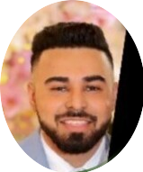

|  | Hi, I'm Mohammed KazmiGeorgia Tech - Data Science M.S Student I am Medical Laboratory Scientist moving into the field of Data Science.
I am a |
| Date | Certification |
|---|---|
| June 2019 | MLT (ASCP) |
| June 2019 | American Society for Clinical Pathology (ASCP) |
| June 2019 | New York State Clinical Laboratory Technologist |
| Date Received | Award |
|---|---|
| October 16th, 2020 | Teamwork Award |
| October 16th, 2020 | Patient/Customer Focus Award |
| April 29th, 2021 | Execution Award |
| June 15th, 2021 | Patient/Customer Focus Award |
| Skill | Familiarity |
|---|---|
| Python | ⭐️⭐️⭐️⭐️⭐️ |
| JSON | ⭐️⭐️⭐️⭐️⭐️ |
| Object Oriented Programming | ⭐️⭐️⭐️⭐️ |
| Ruby | ⭐️⭐️⭐️⭐️ |
| HTML | ⭐️⭐️⭐️⭐️⭐️ |
| Microsoft Office | ⭐️⭐️⭐️⭐️⭐️ |
| Cerner | ⭐️⭐️⭐️⭐️⭐️ |
| Meditech | ⭐️⭐️⭐️⭐️⭐️ |
| WAM | ⭐️⭐️⭐️⭐️⭐️ |
| Allscripts | ⭐️⭐️⭐️⭐️⭐️ |
| HTML | ⭐️⭐️⭐️⭐️ |
| CSS | ⭐️⭐️⭐️⭐️ |